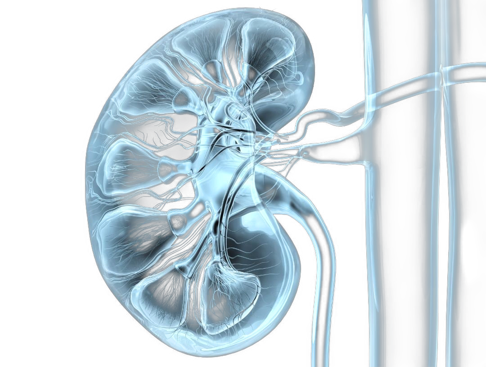
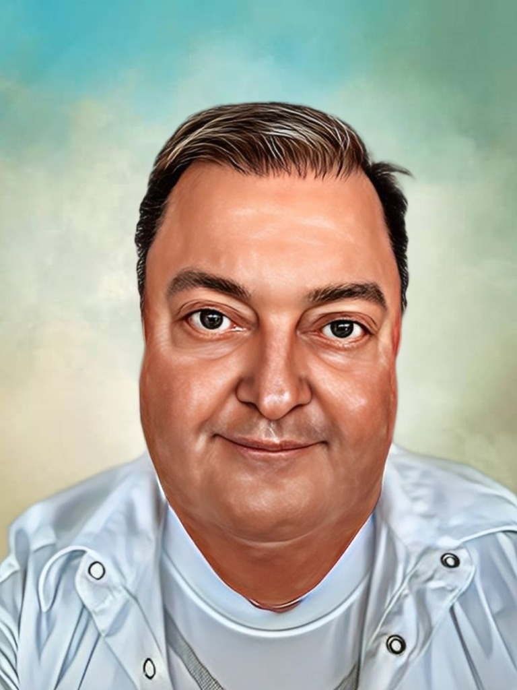

I am a nephrologist and internist, medical educator and author. I bring long experience in dialysis to specialist writing, translation and the development of practical digital tools.

I am a physician specialising in nephrology and internal medicine. My professional work has centred on dialysis and kidney disease; I have led two dialysis centres in Bratislava and worked in medical education.
I write professional and literary texts, translate medical content between Slovak and English, and build websites and applications. I judge technology and artificial intelligence by their practical value: whether they make knowledge more accessible, simplify work or improve the quality of the result.
I take a similar approach in medicine, language and code: define the problem precisely, verify the facts that matter, acknowledge uncertainty and create a clear, usable result.
I am a medical doctor who graduated in General Medicine (1995) and specialized in Nephrology (2009). I am attested in Internal Medicine (1998) and certified in Abdominal Ultrasonic Imaging in Adults (2009).
Areas of Expertise:
I have extensive experience teaching and lecturing in internal medicine, diabetology, nephrology, and related fields. I am also a translator specializing in English-Slovak and Slovak-English medical translation and software localization.
I use technology to build websites, medical calculators and other practical digital tools. My working toolkit includes:
I began my medical education at the University of Pavol Jozef Šafárik in Košice, Slovakia. Since 1995, my focus has been on dialysis and nephrology. From 2013 to 2022, I served as Chief Medical Officer/Head Physician at two dialysis centers in Bratislava.
I am interested in literature, philosophy, poetry and travel. In my books and other writing I return to medicine, moral conflict and the relationship between people and technology.
Nephrology is not only about dialysis. It combines prevention, early diagnosis and long-term treatment of kidney disease with kidney replacement therapy when conservative care is no longer enough.
Chronic kidney disease is long-term kidney damage or reduced kidney function. It often accompanies diabetes or high blood pressure and calls for regular monitoring, treatment of its causes and measures to reduce further decline.
Acute kidney injury is a sudden loss of kidney function. It can occur during severe illness, dehydration, urinary obstruction, or exposure to certain medicines and toxins.
During haemodialysis, blood passes through a dialyser that removes waste and excess fluid and helps restore the body's internal balance.
Peritoneal dialysis uses the lining of the abdomen as a natural dialysis membrane. Dialysis fluid is introduced into the abdominal cavity and drained after a prescribed dwell time.
For suitable patients, kidney transplantation can offer better survival and quality of life than long-term dialysis. It requires careful assessment, lifelong follow-up and immunosuppressive treatment.
Diagnosis draws on medical history, physical examination, blood and urine tests, and imaging. A kidney biopsy is added when clinically indicated.
This information is educational and does not replace a medical examination or individual advice.
Selected guides and practical resources related to health and medicine.
Ako využiť silu hladovania a nezničiť si metabolizmus.
Bezpečnostný manuál k hladovaniu od nefrológa. Odhalíte riziká nesprávne vedeného hladovania a spoznáte inovatívny „Nephro-Safe“ protokol Neera 2.0.
Get it on GumroadExplore other related sites and resources.
For professional collaboration, a lecture, medical translation or a digital project, send me a message. This contact is not intended for urgent medical questions.
lubomir@polascin.net